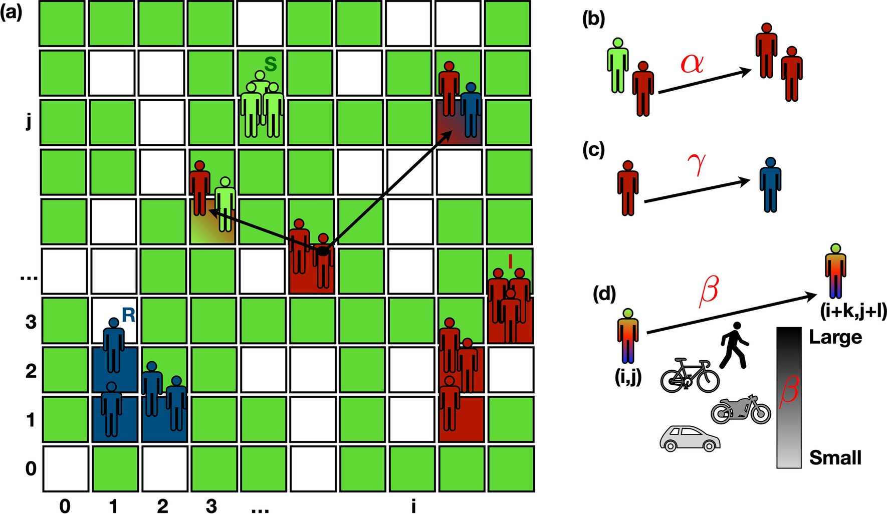

Introduction

Figure 1: Example of an agent-based SIR simulation.Agent-based modeling is a powerful tool for simulating the spread of diseases by capturing interactions at the individual level within a population. This method allows for the study of complex behaviors and multiple factors influencing disease transmission. In this project, you will develop and analyze disease dynamics through agent-based SIR (Susceptible-Infected-Recovered) model simulations.
Task
You will implement a basic agent-based SIR model and incorporate at least one of the following scenarios:
- Movement Patterns: Agents move freely but tend to converge at central locations such as shopping centers or schools.
- Intercommunity Spread: Agents travel between separate communities, influencing regional outbreaks.
- Mask Compliance: Wearing masks reduces infection probability, but some individuals do not comply, leading to heterogeneous risk.
- Other Scenario: Implement a different feature of similar complexity that affects disease spread.
Discussion Points
In your final report, be sure to address the following:
- Implementation Details: Explain your implementation of the core SIR model, including how you handle agent movement, infection, and recovery dynamics.
- Simulation Results: Demonstrate your simulation results using a gif or video in your presentation.
- Additional Features: Present the additional feature(s) you implemented, discussing your approach and challenges encountered.
- Emergent Behaviors: Show examples of emergent behaviors, such as superspreading events or localized outbreaks.
- Parameter Analysis: Analyze how different initial conditions or parameter changes (e.g., infection rate, movement restrictions) affect disease spread.
- Real-World Validation: Compare your simulation’s behavior to real-world epidemic data and discuss its validity.
- Literature Review: Compare your simulation results to findings from state-of-the-art research literature.
- Reflection: Reflect on what you learned about agent-based modeling and disease dynamics through this project.